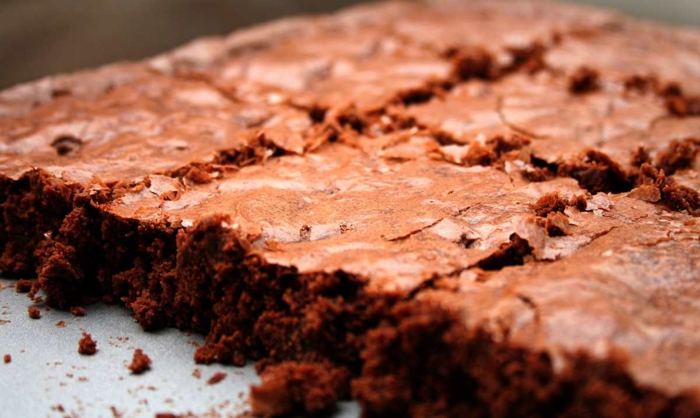

Dejlig klassisk chokoladebrownie med valnødder. Perfekt til en velbrygget
kop kaffe, eller et stort glas mælk. Du kan sagtens bage din brownie dagen
inden den skal serveres, den bliver faktisk kun bedre af at stå natten
over - selvom det kan være svært, at lade sådan en skøn brownie stå til
næste dag. Og så gør det ikke noget at du underbager den lidt, den må
gerne være godt blød og svampet i konsistensen.
Tid: 60+ min.
Ingredienser
- 250 g smør
- 150 g mørk chokolade
- 4 stk. æg
- 250 g sukker
- 150 g hvedemel
- 3 spsk. kakaopulver
- 200g hakkede valnøddekerner

Fremgangsmåde
- Smelt smør og chokolade i en gryde. Lad det køle af.
-
Pisk æg og sukker til en luftig æggesnaps. Bland mel, kakao og
valnøddekerner og vend det forsigtigt i æggesnapsen.
- Vend den afkølede chokoladeblanding i.
-
Hæld dejen i en firkantet form (ca. 20 x 30 cm) - foret med bagepapir.
Bag kagen midt i ovnen og lad den køle af. Skær kagen i 24 firkanter (a
ca. 5 x 5 cm).
-
Bagetid: Ca. 25 min. ved 175° - traditionel ovn. Kagen må gerne være en
anelse underbagt, når den tages ud af ovnen.